Statistics Exercise 1. Introduction to Excel
1 Introduction
MS Excel is widely used in the sciences to organize and analyze data. It includes functions for most basic data operations in a simple-to-overview interface and it is available in most professional organisations.
In this exercise we will look at
- filling cells and moving data,
- referencing cells,
- data organisation,
- the basic graphs (point, bar and line),
- applying functions.
2 Three crosses: Filling cells and moving data
The main parts of the interface is the ribbon at the top where various functionalities can be selected with the mouse, a formula bar (for a new workbook this will simply be an empty space right below the ribbon) where data or formulae can be written, and the spreadsheet area where data and output is placed.
- Let’s start by filling a column with some numbers. Write ID in the top left cell
A1. Then fill the column with values from 1 to 10.
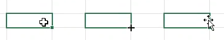
If we want to mark some data (for example to copy it or to apply a function) we can click in one cell and drag to another. The marked area will have a green border. The operation of clicking and dragging has a few different uses in Excel. If the marker is a bold white, clicking and dragging will mark and area. If the marker is placed on the green border of a marked area the marker changes to a cross with arrows at the end; this marker is used to move cells. Finally, if the marker is placed on the bottom right corner of a marked area the marker changes to a thin black cross; this marker is used to auto-fill an area.
- Write ID2 in
B1. Then write 1 inB2and 2 inB3. Mark the cellsB2:B3using the bold white cross. Then place the pointer on the bottom right corner of the marked area, turning the pointer into the thin black cross. Click and drag down toB11. Alternatively, markB2:B3, then double-click the green square at the bottom right of the marked area.
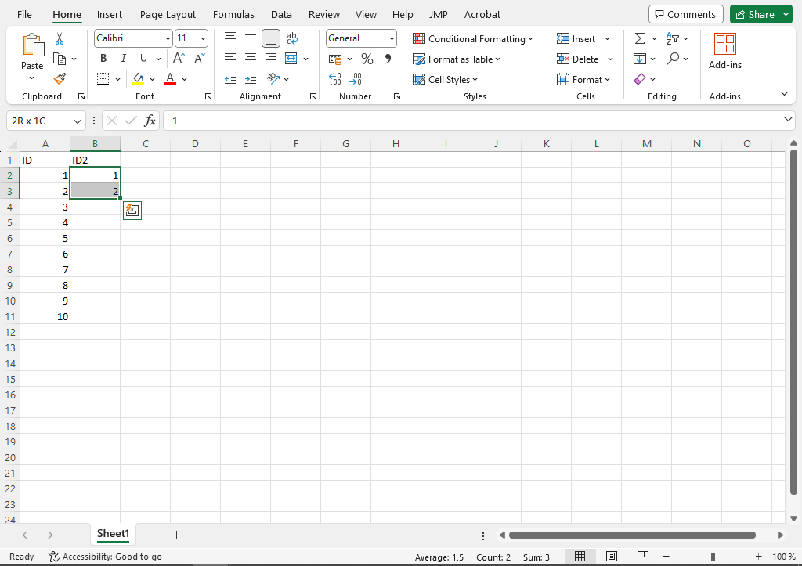
3 Mathematical operations and filling cells
One of the common data operations is the transform a column using some mathematical operation. Examples include changing the unit from hectograms to grams and calculating tree volume based on diameter and height. In Excel operations like these can be done by doing the calculation in one cell and then filling that operation to all rows in the data.
- We want to calculate a new column given by the ID value plus 10, divided by 2. Write a column name y in
C1. Then go toC2and write=(B2+10)/2. Here, the equal sign is used to start a formula, and the calculation is given as the value inB2plus 10 and then divided by 2. The use of parenthesis follows standard mathematical rules so the operation within parenthesis is carried out first. - Next, we want that calculation for every row. This can be done by filling down. A few different ways are equivalent:
- Click the calculated cell
C2and double-click the green square at the bottom right of the marked cell. - Click the calculated cell
C2, click the green square at the bottom right of the marked cell, and drag down to row 11. - Mark cells
C2toC11and click ctrl + D.
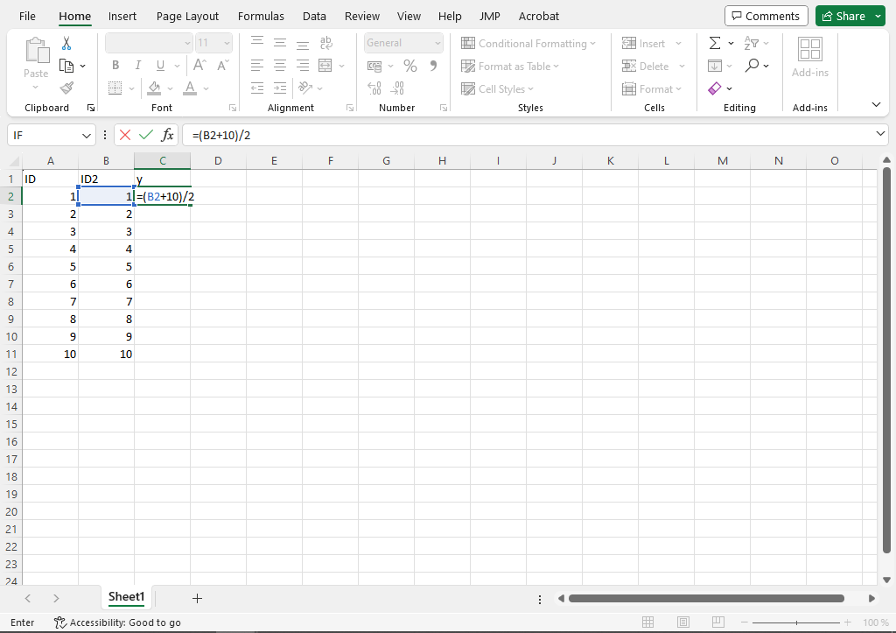
4 Relative and absolute references
If we click any cell in the new column C we can see the formula in the formula bar. The calculation is different for each cell in that each formula is connected to a different cell in the B column. When we filled the C column, the formula changed with each row, so that C5 is connected to B5, C6 to B6 and so on. This is an example of a relative reference. The reference is relative to the current cell: a reference to a cell one step to the left will change when we fill in any direction.
If we don’t want the references to change we can set an absolute reference This is done with $ such as $C$4 to lock both column and row, alternatively $C4 or C$4 to only lock one of them. The F4 key is a shortcut for placing dollarsigns.
- Give the name Relative to column D. Write
=C5in the cellD2and fill down. - Give the name Absolute to column E. Write
=$C$5in the cellE2and fill down.
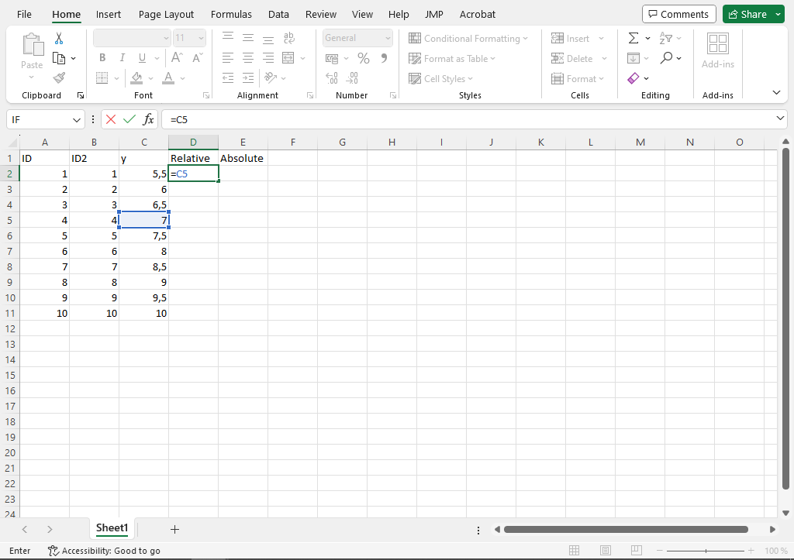
=C5.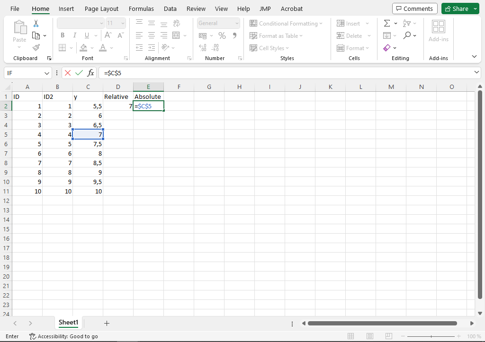
=$C$5.Relative and absolute references are often mixed in a single formula. Say for example that we want to multiply some number with the values in ID, but we want to be flexible with what that number is. We can then use some cell to hold that number and multiply each row value with that cell.
- Write the value 7 in an empty cell, say
I2. Give the name F to column F. Write=A1*$I$2inF2and fill down. What happens when the value inI2is changed?
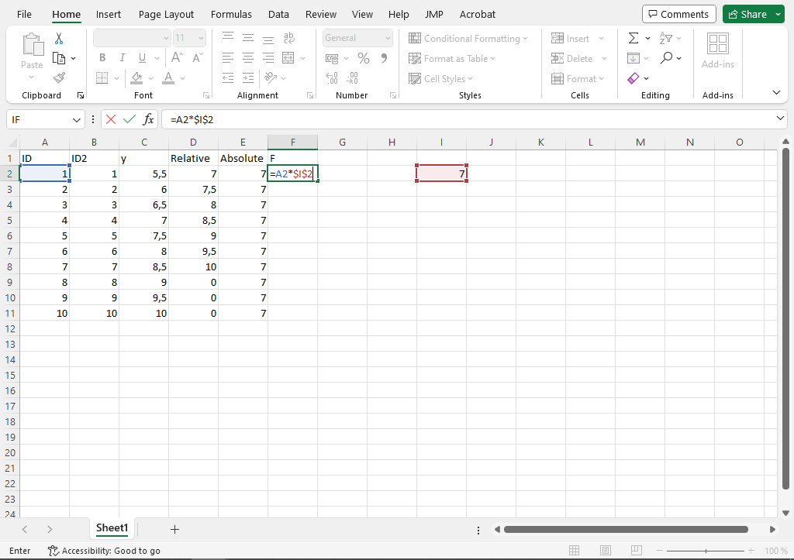
4.1 References when moving cells
As we saw when discussing the types of pointer a marked area can be used with the arrow cross by placing the cursor on the border of the marked area and clicking-and-dragging. Another alternative is to cut with ctrl + X and paste with ctrl + V. In modern Excel versions the references are fixed when moving a cell.
- The cell
C2references toA2. MoveC2to some empty place and note the formula of the cell. Then move it back toC2again. - The cell
A2is referenced byC2. MoveA2to some empty place and note the formula inC2. Then move the cell back toA2.
5 Ready-made functions
A function is some operation that takes an input and produces an output. We saw an example of a function when calculating column C. Excel includes a large number of functions for different operations. You can see some of these by going to Formula in the ribbon and selecting a topic. Some key functions from a statistical point-of-view is to take a sum or a mean, possibly by some grouping.
- The sum function is called
SUMand takes a range of values as input, giving the sum of those values as output. In cellI3, calculate the sum of columnC. - The mean function is called
MEANand takes a range of values as input, giving the mean of those values as output. In cellI4, calculate the mean of columnC. - We almost always want to calculate sums or means for each of multiple groups. One way to do this is by
SUMIFandMEANIF. Start by giving column G a name Grouping and setting the first five values to a and the remaining to b. Mark an empty cell, sayI5and write the formula=SUMIF(G2:G11,"a",F2:F11). TheSUMIFfunction takes three inputs: the grouping area, the condition to check, and the sum area. We can read this as in the range G2 to G11, where the value is equal to a, sum the values in F2 to F11.
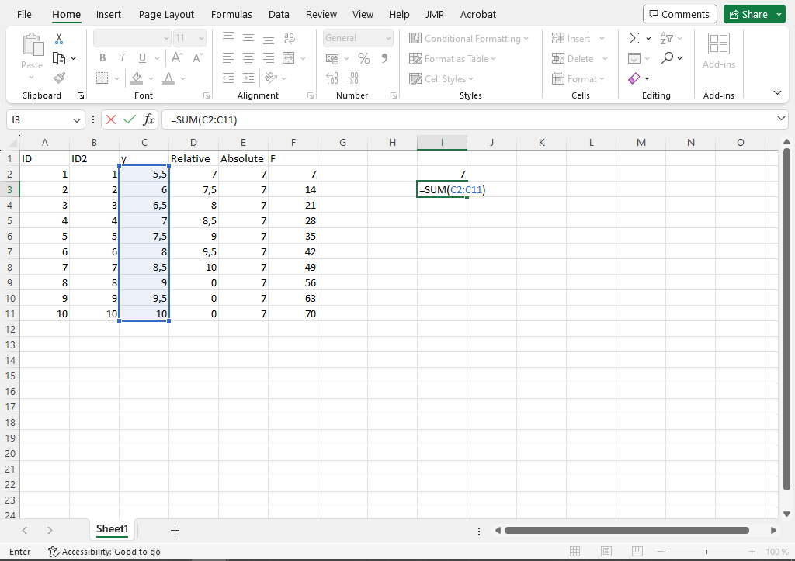
The MEANIF function is one way to calculate mean values by different groups. We will later see another, more flexible, way using pivot tables.
6 A look at some actual data
Let us now turn to some real-world data to explore two common data operations: filtering (where specific observations are chosen from the full set) and sorting (where the data is ordered according to some criteria). The data covers land use in three categories for a few different regions over time. It can be found on the course Canvas page as Agricultural-land-use.xlsx. The source is Our World in Data; more information at https://ourworldindata.org/land-use.
- Find the file on Canvas. Download it to a suitable folder. Open the file in Excel.
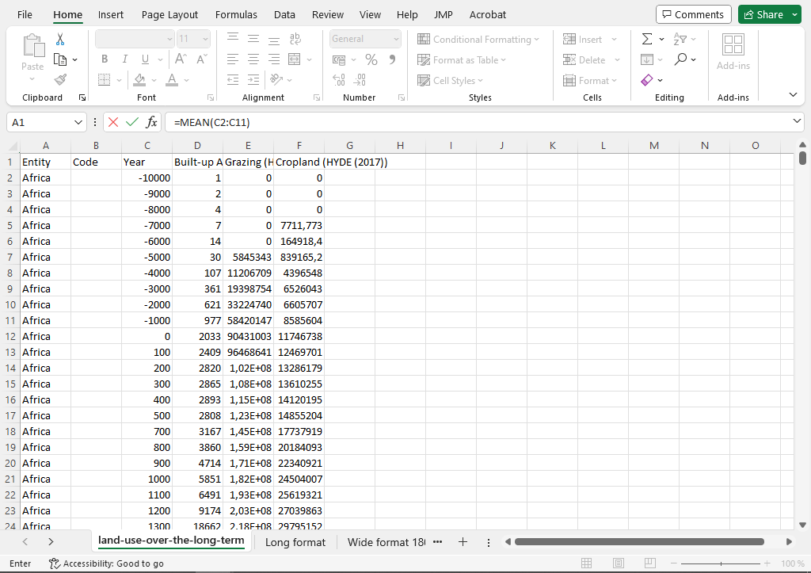
6.1 Data structure
The land use data is a table where each row is given by a region (column Entity) and a year (column Year). There are then three numerical variables for land type (Built-up area, Grazing, and Cropland). This type of data can be structured in a few different ways. The most basic structure would be to have columns for area, year and land-use with a single numerical variable. An example of this is given in the sheet Long format. Another format could be to let region and land-use define each row and have one column for each year.
When talking about different data structures we use the terms longer and wider. A longer dataset is one where there are more rows and a wider dataset is one where there are more columns. The operation of going from one structure to another is called pivoting.
7 Filter data
It is very common that we are interested in a subset of the rows in our dataset – we want to filter the data for certain rows. One simple way to filter in Excel is to add filter buttons to our dataset. This can be done by selecting the data, clicking the Sort and Filter button in the Start ribbon and selecting Filter. If done correctly small arrows are added to each column name. Clicking these arrows will give some options for filtering.
- Use the filter for region and year to select the row for World in 1960.
- For numerical variables the filter menu has some specific options. Use these to filter for World since 1960, i.e 1960 and all later observations.
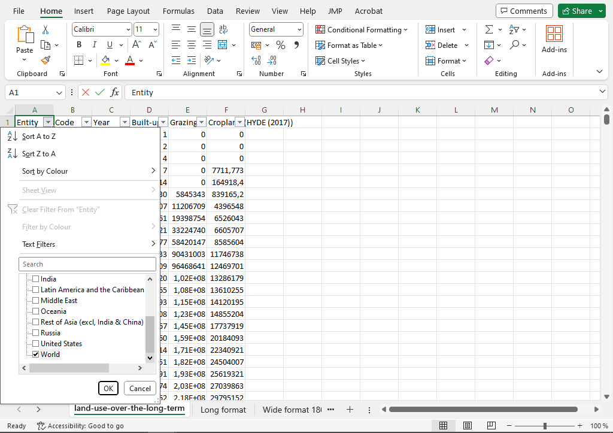
To remove a filter one can click the filter button and clear the current filter. This can also be done under Sort and Filter in the ribbon.
8 Sorting
The buttons at the top of each column can also be used for sorting the data according to some variable.
- Remove any filter. Sort the data by Cropland in decreasing order.
- If there is a filter on a dataset and the data is sorted, only the filtered rows will be sorted. As an example of this, apply a filter on the year 600, sort by Cropland in decreasing order, and remove the filter. What happens to the order of the data? It is therefore important to keep track of any filters.
Since sorting changes the order of the data it is good to have a column of row IDs so that one can easily go back to the original order by sorting by ID. As a general rule the interpretation of a dataset should not rely one the order. It should be possible to randomly reorder the rows without losing any information.
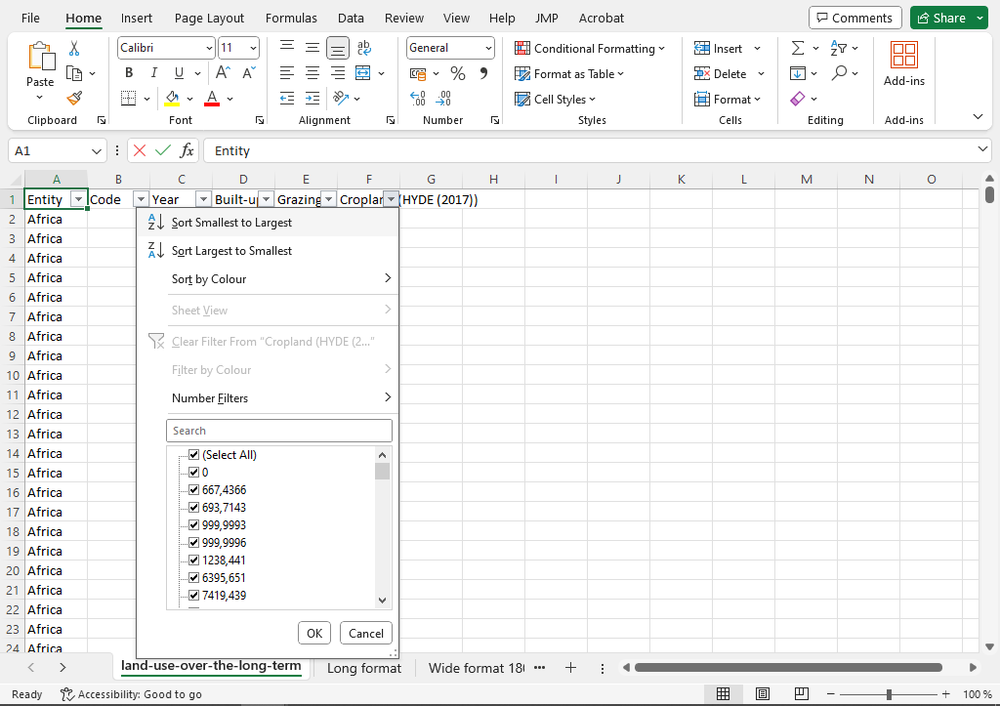
9 Graphs
Excel includes a large number of functions for graphs. The behaviour of Excels graph function depend on the structure of the data and the amount of work needed to create an understandable, neat-looking graph can vary quite a bit depending on data format and graph type. Nonetheless, Excel is a flexible tool, both in the types of graphs that are available and in the detailed appearance of the graph. Here we look at four of the most fundamental graph types: a scatter plot, a bar chart, and a pie chart.
9.1 Scatter plot
A scatter plot illustrates two numeric variables, one on the x-axis and one on the y-axis. Each observation is a point in the graph located at the (x,y)-coordinates given by the two variables. Common variations are to color points according to a group variable or to connect the size of the point to a third variable (a bubble graph).
- In the first sheet of the land use data, filter the data for the year 2016. Then mark the columns for grazing and cropland. Then go to the Insert ribbon and find the mini-button for the scatter plot (bottom middle of the graph icons). Click it to see some suggested graph. Select the basic one, with only points.
- The default graph is missing axis labels. These can be added in a few different ways, for example by clicking in a white space of the graph and adding a graph element with the plus buttom which should appear to the top-right of the graph. Use this to add labels to the graph.
- The appearance of a graph can be changed to fairly great detail. Try double-clicking a point to reach an editor. The menu at the top of the editor window (the text typically start with Alternatives for) can be used to select a specific part of the graph to change. Try to find change the color of the points.
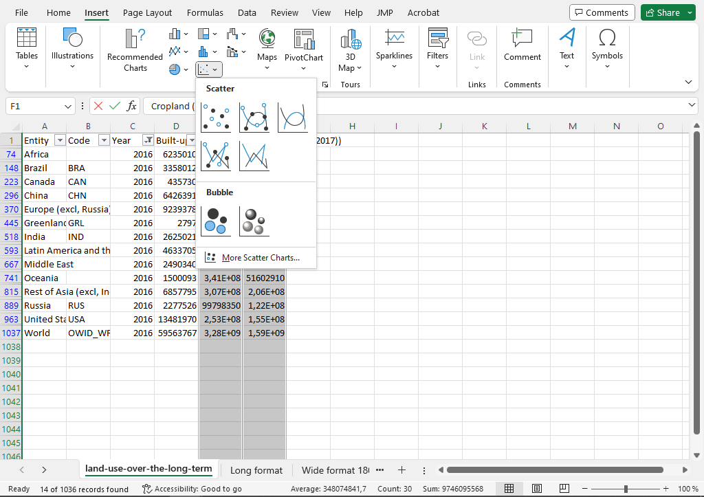
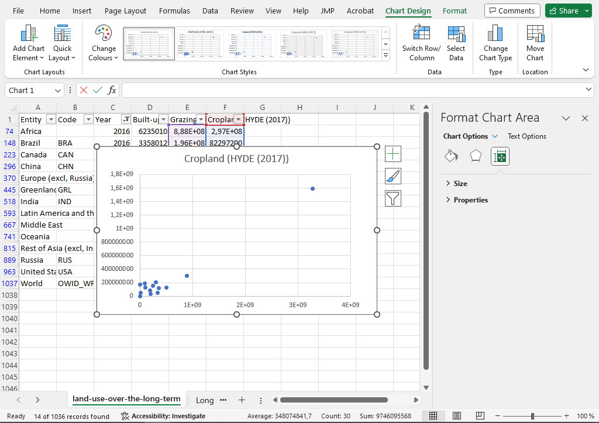
9.2 Bar chart
A bar chart illustrates a numerical value as the height of a bar. Commonly multiple bars are shown in one graph, with each bar connected to a group in a categorical variable. The bar can be divided into different sections by a filled in color.
- We want to create a bar chart which for a given year shows each land use for each geographical entity. Filter for a single year, say 2010. Then mark the columns for Entity and the three numerical columns. This can be done by clicking in the column header (where there is a letter indicating the column) and then clicking the other three columns while holding the ctrl key (on a windows system). Then we go to the Insert ribbon and select the bar chart icon among the different graph options. There are a few different options depending on whether one want grouped bars (the sections standing next to each other) or stacked bars (the sections placed on top of each other). Pick whichever you prefer.
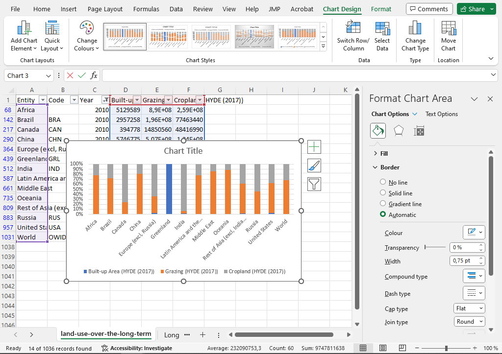
9.3 Pie chart
A pie chart illustrates the parts of a total as sectors of a circle (the pie). It shows the relative sizes of different groups. The pie chart has met some criticism for being difficult to read and it is generally recommended to not use a pie chart when the number of groups is large or when the differences between groups is small. In those cases, a bar chart with grouped bars may be clearer.
- A pie chart can be made with just a single column of numerical data, but typically we also want a categorical variable to create labels for each sector. In the first sheet of the excel file, filter for a particular year, then mark the column with region and the numerical values with grazing. Then select the pie chart icon in the Insert ribbon. Pick the top-left standard pie chart. The resulting pie chart should have a legend showing which sector belongs to what region.
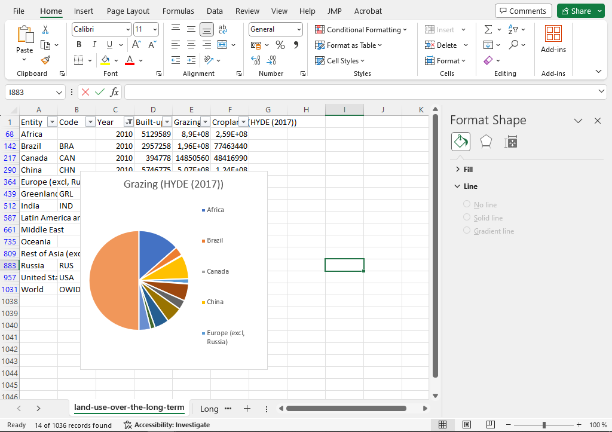
10 Upcoming material
In the next computer exercise we will look at
- using pivot tables to calculate summary statistics of different variables for each of multiple groups,
- using pivot tables to create graphs with some basic interactivity,
- produce some of the standard scientific graphs (boxplots, barcharts with errorbars, and the histogram).